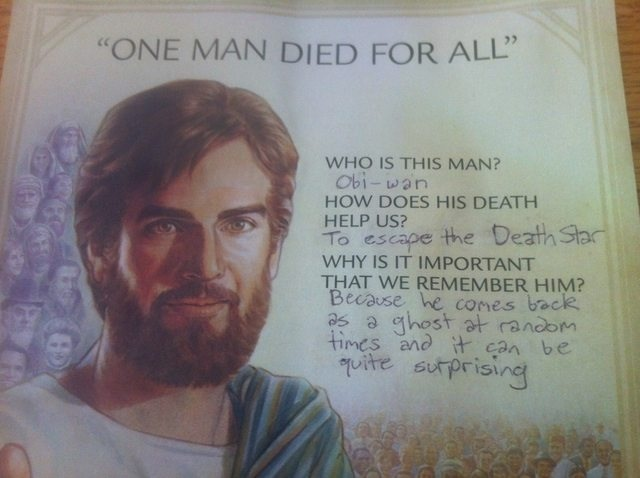

If you can keep your head when all about you Are losing theirs and blaming it on you, If you can trust yourself when all men doubt you, But make allowance for their doubting too; If you can wait and not be tired by waiting, Or being lied about, don’t deal in lies, Or being hated, don’t give way to hating, And yet don’t look too good, nor talk too wise:
If you can dream-and not make dreams your master; If you can think-and not make thoughts your aim; If you can meet with Triumph and Disaster And treat those two impostors just the same; If you can bear to hear the truth you’ve spoken Twisted by knaves to make a trap for fools, Or watch the things you gave your life to, broken, And stoop and build ’em up with worn-out tools:
If you can make one heap of all your winnings And risk it on one turn of pitch-and-toss, And lose, and start again at your beginnings And never breathe a word about your loss; If you can force your heart and nerve and sinew To serve your turn long after they are gone, And so hold on when there is nothing in you Except the Will which says to them: ‘Hold on!’
If you can talk with crowds and keep your virtue, Or walk with Kings-nor lose the common touch, If neither foes nor loving friends can hurt you, If all men count with you, but none too much; If you can fill the unforgiving minute With sixty seconds’ worth of distance run, Yours is the Earth and everything that’s in it, And-which is more-you’ll be a Man, my son!
